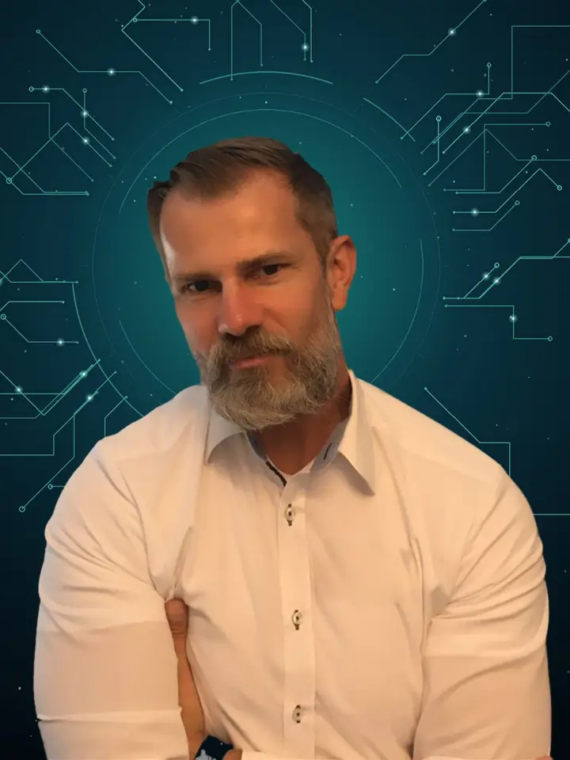

01
01Omnichannel-Strategie
Kanäle, Customer Journeys und Service Routing analysieren, Zielbild entwickeln und eine umsetzbare Roadmap definieren.
DIGITAL SERVICE CONSULTING
Omnichannel. Chatbots. Voicebots. KI.
Digitale Kundenkommunikation mit messbarem Mehrwert – praxisnah, unabhängig und mit mehr als 20 Jahren Erfahrung in Kundenservice-Organisationen.
PRAXIS STATT POWERPOINT
Ich unterstütze Unternehmen dabei, Kundenservice einfacher, digitaler und wirtschaftlicher zu gestalten. Im Mittelpunkt stehen Omnichannel-Kommunikation, Chatbots, Voicebots, KI und die Optimierung von Serviceprozessen.
Mein Ansatz verbindet Fachlichkeit, Organisation und Technologie – mit Blick auf Kundenzufriedenheit, Effizienz und konkrete Umsetzung.
LEISTUNGEN
01Kanäle, Customer Journeys und Service Routing analysieren, Zielbild entwickeln und eine umsetzbare Roadmap definieren.
 02
02Use Cases identifizieren, Wirtschaftlichkeit bewerten, Konzepte entwickeln und Einführung oder Optimierung begleiten.
 03
03Telefonische Prozesse analysieren, Automatisierungspotenziale erkennen, Dialoge und Routing konzipieren und Piloten begleiten.
 04
04Potenziale bewerten, KI-Roadmap und Business Case entwickeln sowie Piloten, Governance und Umsetzung begleiten.
 05
05Organisation, Kennzahlen, Workforce Management, Qualität, Produktivität und Prozesse systematisch verbessern.
 06
06Beratung bei Herausforderungen in Beschaffungs- und Vergabeverfahren: Anforderungen klar beschreiben, Leistungen strukturieren und Angebote nachvollziehbar bewerten.
ÜBER MICH
„Ich habe die Probleme großer Kundenservice-Organisationen selbst geführt und gelöst.“

Seit über 20 Jahren begleite ich Kundenservice-Organisationen bei der Optimierung von Prozessen, der Digitalisierung von Kundenkontakten und dem Einsatz moderner Technologien.
FÜR WEN
Private Versicherungen und serviceintensive Organisationen.
Energieversorger, Stadtwerke und Unternehmen mit vielen Kundenkontakten.
Unternehmen, die Servicequalität und Effizienz gleichzeitig weiterentwickeln wollen.
Contact Center, Outsourcing-Dienstleister und öffentliche Verwaltungen.
MEIN ANSATZ
Ausgangslage, Kundenreisen, Prozesse und Kennzahlen erfassen.
Potenziale bewerten und die relevanten Hebel identifizieren.
Zielbild, Maßnahmen, Business Case und Roadmap entwickeln.
Einführung, Pilotierung und Optimierung praxisnah begleiten.
KONTAKT
In einem kostenlosen Erstgespräch klären wir, wo Sie stehen, welche Herausforderungen Sie lösen möchten und ob ich Sie dabei unterstützen kann.
Website teilen
QR-Code scannen und direkt auf hetkaemper-consulting.de landen.